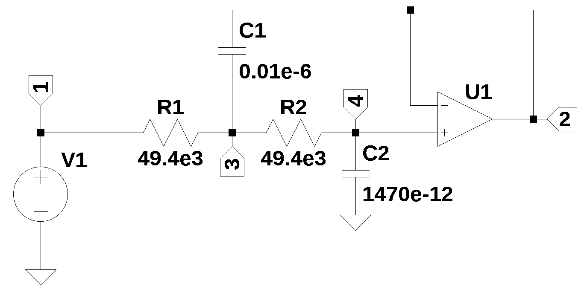
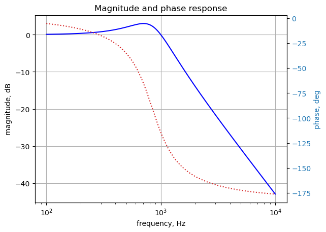
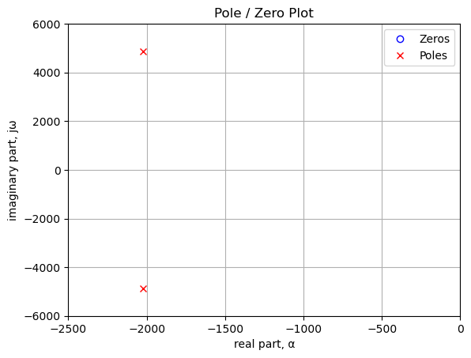
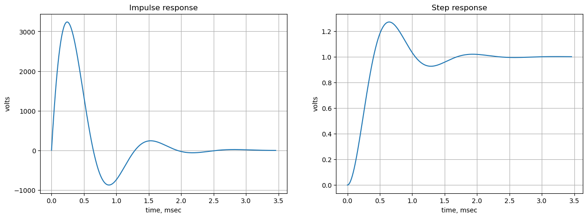

from sympy import *
import numpy as np
from scipy import signal
import matplotlib.pyplot as plt
import pandas as pd
import SymMNA
from IPython.display import display, Markdown, Math, Latex
init_printing()7 Transfer Function
A transfer function is a fundamental mathematical representation used in circuit design to characterize the relationship between a circuit’s output signal and its input signal. Specifically, it is defined as the ratio of the Laplace transform of the output (response) to the Laplace transform of the input (excitation), assuming all initial conditions are zero. This function, typically denoted as \(H(s)\) where \(s\) is the complex frequency variable equal to \((j\omega)\), allows engineers to analyze and predict the circuit’s behavior across different frequencies. By examining the poles (roots of the denominator) and zeros (roots of the numerator) of the transfer function, one can determine crucial circuit properties such as gain, stability, frequency response (e.g., whether it acts as a low-pass or high-pass filter), and transient behavior, making it an indispensable tool for designing and optimizing filters, amplifiers, and control systems.
This notebook walks through the Python code used to find the transfer function of the circuit shown in Figure 7.1.

The circuit above is a 2nd order low pass filter from Stout (1976). The schematic of the circuit is shown with each node annotated. The filter shown is being used to illustrate the application of Python to obtain the transfer function, \(\frac {V_2} {V_1}\).
This circuit has two complex poles and by proper choice of \(R_1\), \(R_2\), \(C_1\) and \(C_2\) the complex poles can be positioned to realize Bessel, Butterworth or Chebyshev filter characteristics. The component values shown in the schematic produce a low pass filter with a cut off frequency of 1000 Hz and a 3 dB Chebyshev response.
The Python MNA code supports the Op Amp component type designated with the letter ‘O’ and is shown on the send line of the netlist.
The following Python modules are used in this notebook.
Load the net list
net_list = '''
R1 3 1 49.4e3
O1 2 4 2
V1 1 0 1
R2 4 3 49.4e3
C2 4 0 1470e-12
C1 2 3 0.01e-6
'''Call the symbolic modified nodal analysis function to generate the MNA matrices.
report, network_df, i_unk_df, A, X, Z = SymMNA.smna(net_list)Assemble and build the network equations.
# Put matrices into SymPy
X = Matrix(X)
Z = Matrix(Z)
NE_sym = Eq(A*X,Z)
# turn the free symbols into SymPy variables.
var(str(NE_sym.free_symbols).replace('{','').replace('}',''))
# display the equations
temp = ''
for i in range(shape(NE_sym.lhs)[0]):
temp += '${:s} = {:s}$<br>'.format(latex(NE_sym.rhs[i]),latex(NE_sym.lhs[i]))
Markdown(temp)\(0 = I_{V1} + \frac{v_{1}}{R_{1}} - \frac{v_{3}}{R_{1}}\)
\(0 = C_{1} s v_{2} - C_{1} s v_{3} + I_{O1}\)
\(0 = - C_{1} s v_{2} + v_{3} \left(C_{1} s + \frac{1}{R_{2}} + \frac{1}{R_{1}}\right) - \frac{v_{4}}{R_{2}} - \frac{v_{1}}{R_{1}}\)
\(0 = v_{4} \left(C_{2} s + \frac{1}{R_{2}}\right) - \frac{v_{3}}{R_{2}}\)
\(V_{1} = v_{1}\)
\(0 = v_{2} - v_{4}\)
Use the SymPy function solve to deterermine the unknown node voltages and device currents.
U_sym = solve(NE_sym,X)
temp = ''
for i in U_sym.keys():
temp += '${:s} = {:s}$<br>'.format(latex(i),latex(U_sym[i]))
Markdown(temp)\(v_{1} = V_{1}\)
\(v_{2} = \frac{V_{1}}{C_{1} C_{2} R_{1} R_{2} s^{2} + C_{2} R_{1} s + C_{2} R_{2} s + 1}\)
\(v_{3} = \frac{C_{2} R_{2} V_{1} s + V_{1}}{C_{1} C_{2} R_{1} R_{2} s^{2} + C_{2} R_{1} s + C_{2} R_{2} s + 1}\)
\(v_{4} = \frac{V_{1}}{C_{1} C_{2} R_{1} R_{2} s^{2} + C_{2} R_{1} s + C_{2} R_{2} s + 1}\)
\(I_{V1} = \frac{- C_{1} C_{2} R_{2} V_{1} s^{2} - C_{2} V_{1} s}{C_{1} C_{2} R_{1} R_{2} s^{2} + C_{2} R_{1} s + C_{2} R_{2} s + 1}\)
\(I_{O1} = \frac{C_{1} C_{2} R_{2} V_{1} s^{2}}{C_{1} C_{2} R_{1} R_{2} s^{2} + C_{2} R_{1} s + C_{2} R_{2} s + 1}\)
The symbolic transfer function, \(H_{sym}=\frac {v_2}{v_1}\).
H_sym = (U_sym[v2]/U_sym[v1]).simplify().collect(s)
H_sym\(\displaystyle \frac{1}{C_{1} C_{2} R_{1} R_{2} s^{2} + s \left(C_{2} R_{1} + C_{2} R_{2}\right) + 1}\)
The numerator and denominator of the transfer function can be obtained as follows:
num, den = fraction(H_sym)The roots of the numerator can be obtained symbolically. Since the degree of the polynominal is a second order function of \(s\), SymPy can solve for the roots and obtain a solution very quickly. The roots expressed in symbolic form are sometimes not very useful, but are easily obtained, something that would be almost impossible to do by hand with pencil and paper for higher order polynominals.
The characteristic equation of a transfer function, \(H(s) = \frac{N(s)}{D(s)}\), is the polynomial equation obtained by setting the denominator polynomial, \(D(s)\), equal to zero: \(D(s) = 0\). The roots of this equation are the poles of the transfer function, which are critical for determining the system’s fundamental dynamic behavior and its stability. In circuit design, for linear time-invariant (LTI) systems, the location of these roots in the complex \(s\)-plane dictates whether the system is stable (all poles have negative real parts, lying in the left-half plane), marginally stable (non-repeated poles on the \(j\omega\)-axis), or unstable (at least one pole in the right-half plane or repeated poles on the \(j\omega\)-axis). The characteristic equation, therefore, directly governs the natural or transient response of the circuit without considering the specific input signal, revealing essential properties like damping ratio, natural frequency, and time constants.
The roots of the denominator can be obtained symbolically.
p = solve(den,s)
p[0]\(\displaystyle \frac{C_{2} \left(- R_{1} - R_{2}\right) - \sqrt{C_{2} \left(- 4 C_{1} R_{1} R_{2} + C_{2} R_{1}^{2} + 2 C_{2} R_{1} R_{2} + C_{2} R_{2}^{2}\right)}}{2 C_{1} C_{2} R_{1} R_{2}}\)
p[1]\(\displaystyle \frac{- C_{2} \left(R_{1} + R_{2}\right) + \sqrt{C_{2} \left(- 4 C_{1} R_{1} R_{2} + C_{2} R_{1}^{2} + 2 C_{2} R_{1} R_{2} + C_{2} R_{2}^{2}\right)}}{2 C_{1} C_{2} R_{1} R_{2}}\)
Construct a dictionary of element values.
element_values = SymMNA.get_part_values(network_df)
# display the component values
for k,v in element_values.items():
print('{:s} = {:s}'.format(str(k), str(v)))V1 = 1.0
R1 = 49400.0
O1 = nan
R2 = 49400.0
C2 = 1.47e-09
C1 = 1e-08Put the component values into the equations.
NE = NE_sym.subs(element_values)Display the network equations with numerical component values.
temp = ''
for i in range(shape(NE.lhs)[0]):
temp += '${:s} = {:s}$<br>'.format(latex(NE.rhs[i]),latex(NE.lhs[i]))
Markdown(temp)\(0 = I_{V1} + 2.02429149797571 \cdot 10^{-5} v_{1} - 2.02429149797571 \cdot 10^{-5} v_{3}\)
\(0 = I_{O1} + 1.0 \cdot 10^{-8} s v_{2} - 1.0 \cdot 10^{-8} s v_{3}\)
\(0 = - 1.0 \cdot 10^{-8} s v_{2} - 2.02429149797571 \cdot 10^{-5} v_{1} + v_{3} \cdot \left(1.0 \cdot 10^{-8} s + 4.04858299595142 \cdot 10^{-5}\right) - 2.02429149797571 \cdot 10^{-5} v_{4}\)
\(0 = - 2.02429149797571 \cdot 10^{-5} v_{3} + v_{4} \cdot \left(1.47 \cdot 10^{-9} s + 2.02429149797571 \cdot 10^{-5}\right)\)
\(1.0 = v_{1}\)
\(0 = v_{2} - v_{4}\)
Solve for voltages and currents and display the results.
U = solve(NE,X)
temp = ''
for i in U.keys():
temp += '${:s} = {:s}$<br>'.format(latex(i),latex(U[i]))
Markdown(temp)\(v_{1} = 1.0\)
\(v_{2} = \frac{1.36591868959225 \cdot 10^{28}}{4.9 \cdot 10^{20} s^{2} + 1.9838056680162 \cdot 10^{24} s + 1.36591868959225 \cdot 10^{28}}\)
\(v_{3} = \frac{9.91902834008098 \cdot 10^{23} s + 1.36591868959225 \cdot 10^{28}}{4.9 \cdot 10^{20} s^{2} + 1.9838056680162 \cdot 10^{24} s + 1.36591868959225 \cdot 10^{28}}\)
\(v_{4} = \frac{1.36591868959225 \cdot 10^{28}}{4.9 \cdot 10^{20} s^{2} + 1.9838056680162 \cdot 10^{24} s + 1.36591868959225 \cdot 10^{28}}\)
\(I_{V1} = \frac{- 9.91902834008098 \cdot 10^{26} s^{2} - 2.0079004737006 \cdot 10^{30} s}{4.9 \cdot 10^{31} s^{2} + 1.9838056680162 \cdot 10^{35} s + 1.36591868959225 \cdot 10^{39}}\)
\(I_{O1} = \frac{9.91902834008098 \cdot 10^{15} s^{2}}{4.9 \cdot 10^{20} s^{2} + 1.9838056680162 \cdot 10^{24} s + 1.36591868959225 \cdot 10^{28}}\)
Plot the frequency response of the transfer function
H = U[v2]/U[v1]
H\(\displaystyle \frac{1.36591868959225 \cdot 10^{28}}{4.9 \cdot 10^{20} s^{2} + 1.9838056680162 \cdot 10^{24} s + 1.36591868959225 \cdot 10^{28}}\)
num, denom = fraction(H) #returns numerator and denominator
# convert symbolic to numpy polynomial
a = np.array(Poly(num, s).all_coeffs(), dtype=float)
b = np.array(Poly(denom, s).all_coeffs(), dtype=float)
x = np.logspace(2, 4, 2000, endpoint=False)*2*np.pi
w, mag, phase = signal.bode((a, b), w=x) # returns: rad/s, mag in dB, phase in degThe magnitude response and phase response together form the frequency response of a transfer function, \(H(s)\), which is essential for understanding how a circuit processes different sinusoidal input signals. The frequency response is obtained by substituting \(s = j\omega\) into the transfer function, yielding the complex function \(H(j\omega)\). The magnitude response, \(|H(j\omega)|\), represents the gain or attenuation of the circuit at a specific angular frequency \(\omega\). It shows how the amplitude of the output signal changes relative to the input signal’s amplitude as the input frequency varies. The phase response, \(\angle H(j\omega)\), represents the phase shift (or delay) introduced by the circuit between the output and input signals at that same frequency \(\omega\). These two components are typically plotted separately against frequency on a Bode plot and are crucial for applications like filter design, where specific gain and phase characteristics are required over a range of frequencies.
Plot the results.
fig, ax1 = plt.subplots()
ax1.set_ylabel('magnitude, dB')
ax1.set_xlabel('frequency, Hz')
plt.semilogx(w/(2*np.pi), mag,'-b') # Bode magnitude plot
ax1.tick_params(axis='y')
plt.grid()
# instantiate a second y-axes that shares the same x-axis
ax2 = ax1.twinx()
color = 'tab:blue'
plt.semilogx(w/(2*np.pi), phase,':',color='tab:red') # Bode phase plot
ax2.set_ylabel('phase, deg',color=color)
ax2.tick_params(axis='y', labelcolor=color)
plt.title('Magnitude and phase response')
plt.show()
The poles and zeros of the transfer function can easly be obtained with the following code:
The pole-zero plot, also known as the s-plane plot, is a graphical representation of a transfer function, \(H(s)\), where the locations of its poles and zeros are marked on the complex \(s\)-plane. The zeros (roots of the numerator \(N(s)\)) are traditionally marked with a circle (\(\circ\)), and the poles (roots of the denominator \(D(s)\)) are marked with a cross (\(\times\)). The horizontal axis of the \(s\)-plane represents the real part (\(\sigma\)) which relates to the damping and transient response (decay or growth), while the vertical axis represents the imaginary part (\(j\omega\)) which relates to the oscillation frequency and sinusoidal steady-state response. This plot is a crucial visual aid because the relative positions of the poles and zeros immediately reveal key insights into the circuit’s characteristics, such as its stability, natural frequencies, and how it will selectively amplify or attenuate signals at different frequencies, which is fundamental in filter design.
The proximity of a poles to the imaginary axis (\(j\omega\) axis) in the pole-zero plot has a profound impact on the frequency response of the circuit. The closer a pole is to the \(j\omega\) axis, the greater its influence on the magnitude of the transfer function \(|H(j\omega)|\) for frequencies near the pole’s imaginary part. Specifically, a pole close to the axis corresponds to a higher Q-factor (quality factor), resulting in a sharp peak or resonance in the magnitude response curve at the pole’s natural frequency, \(\omega_d\) (which is the imaginary part of the pole). This means the circuit will selectively amplify signals at that specific frequency. Conversely, a pole located farther to the left (more negative real part \(\sigma\)) corresponds to a highly damped system, resulting in a much broader and flatter frequency response peak, or potentially no noticeable peak at all, as the system’s energy quickly dissipates.
The poles and zeros of the preamp transfer function are plotted.
sys = signal.TransferFunction(a,b)
sys_zeros = np.roots(sys.num)
sys_poles = np.roots(sys.den)
plt.plot(np.real(sys_zeros), np.imag(sys_zeros), 'ob', markerfacecolor='none')
plt.plot(np.real(sys_poles), np.imag(sys_poles), 'xr')
plt.legend(['Zeros', 'Poles'], loc=0)
plt.title('Pole / Zero Plot')
plt.xlabel('real part, \u03B1')
plt.ylabel('imaginary part, j\u03C9')
plt.xlim((-2500,0))
plt.ylim((-6000,6000))
plt.grid()
plt.show()
Poles and zeros of the transfer function plotted on the complex plane. The units are in radian frequency.
Printing these values in Hz.
print('number of zeros: {:d}'.format(len(sys_zeros)))
for i in sys_zeros:
print('{:,.2f} Hz'.format(i/(2*np.pi)))number of zeros: 0print('number of poles: {:d}'.format(len(sys_poles)))
for i in sys_poles:
print('{:,.2f} Hz'.format(i/(2*np.pi)))number of poles: 2
-322.18+776.08j Hz
-322.18-776.08j HzThe impulse response, \(h(t)\), and the step response, \(r(t)\), are two fundamental time-domain characteristics of a circuit defined by its transfer function, \(H(s)\). The impulse response is the circuit’s output when the input is an ideal Dirac delta function, \(\delta(t)\), which is useful because \(h(t)\) is the inverse Laplace transform of the transfer function itself: \(h(t) = \mathcal{L}^{-1}\{H(s)\}\). It essentially reveals the natural, unforced behavior of the system. In contrast, the step response is the output when the input is a unit step function, \(u(t)\) (a signal that jumps from zero to one at \(t=0\)), and it is related to the impulse response by integration: \(r(t) = \int_0^t h(\tau) d\tau\). Analyzing the step response is especially practical in circuit testing as it allows engineers to easily assess key performance metrics like rise time, settling time, overshoot, and steady-state error, all of which are crucial for evaluating the speed and quality of a circuit’s transient behavior.
Rise time and settling time are key metrics derived from the step response that quantify the speed and convergence of a circuit’s transient behavior.
- Rise Time (\(t_r\)): This is the time required for the step response to go from 10% of its final value to 90% of its final value. A shorter rise time indicates a faster circuit response. It is a measure of how quickly the system can react to a sudden change in input.
- Settling Time (\(t_s\)): This is the time required for the step response to reach and stay within a specified tolerance band around its final, steady-state value. The tolerance band is typically 2% or 5% of the final value. A common definition uses the 2% band. A shorter settling time indicates that the oscillations or transient effects damp out quickly, meaning the circuit stabilizes faster and is a measure of the circuit’s overall speed and damping.
Both measurements are essential for evaluating system performance, where rise time reflects the initial speed, and settling time reflects the overall stability and convergence of the output.
Use the SciPy functions impulse and step to plot the impulse and step response of the system.
plt.subplots(1,2,figsize=(15, 5))
# using subplot function and creating
# plot one
plt.subplot(1, 2, 1)
# impulse response
t, y = signal.impulse(sys,N=500)
plt.plot(t/1e-3, y)
plt.title('Impulse response')
plt.ylabel('volts')
plt.xlabel('time, msec')
plt.grid()
# using subplot function and creating plot two
plt.subplot(1, 2, 2)
t, y = signal.step(sys,N=500)
plt.plot(t/1e-3, y)
plt.title('Step response')
plt.ylabel('volts')
plt.xlabel('time, msec')
plt.grid()
# show plot
plt.show()
7.1 Summary
The transfer function for a 2nd order low pass filter was obtained. Key points from this analysis:
- Frequency response plots can easily be make by use of the Python libraries.
- The poles and zeros of the transfer function can be plotted
- The impulse and step response are easily obtained and plotted